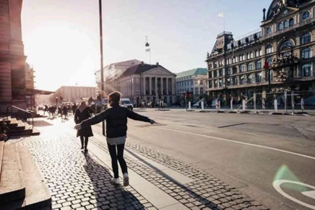

Have you ever wondered which transit method, whether it be a personal automobile or public transit,
is better for your overall quality of life? Well,
facts prove that public transit offers a better quality of life for your mental
and physical health, along with providing more social opportunities and being more sustainable over time.
What must be done: Lessons from Copenhagen for the Future of Urban Planning

The transformation of Copenhagen from a car-dependent city into a global leader in public transit and walkability was not an accident, but a strategic response to crisis. In the years
following World War II, Copenhagen mirrored many modern cities, prioritizing highways and personal vehicles over all else. However, the global oil crisis of the 1970s served as a major wake-up call; as fuel prices skyrocketed, citizens began to protest the lack of travel alternatives, famously organizing "car-free Sundays" to reclaim their streets. This public pressure led to the implementation of the "Finger Plan," a long-term urban strategy that organized the city’s growth into five development "fingers" radiating from the center. By connecting these areas through efficient rail and bus networks while preserving natural green spaces in between, Copenhagen ensured that the city could grow without sacrificing the quality of life of its residents.
To achieve this same success in our own communities, we must prioritize practical planning that makes public transit and walking the most convenient options for daily life. First, we need to focus on new housing and business development directly around existing transit hubs, ensuring that people can live, work, and shop without needing to rely on a personal vehicle. Second, city leaders must begin to reallocate street space; by reducing the amount of land dedicated to car parking and widening sidewalks and dedicated transit lanes, cities can make walking and public transport safer and more accessible. Finally, we must invest in integrated networks that allow residents to seamlessly switch between buses, trains, and walking paths. By shifting our investment away from highway expansion and toward these interconnected, human-scale projects, we can build cities that are more affordable, sustainable, and better connected for everyone.